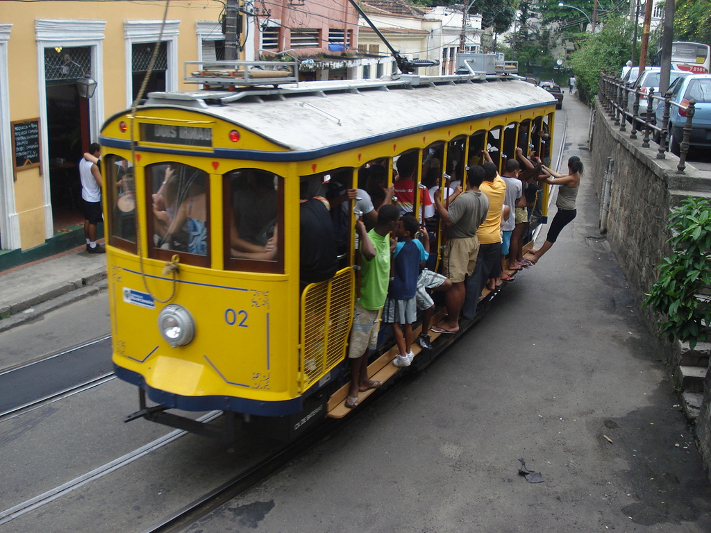
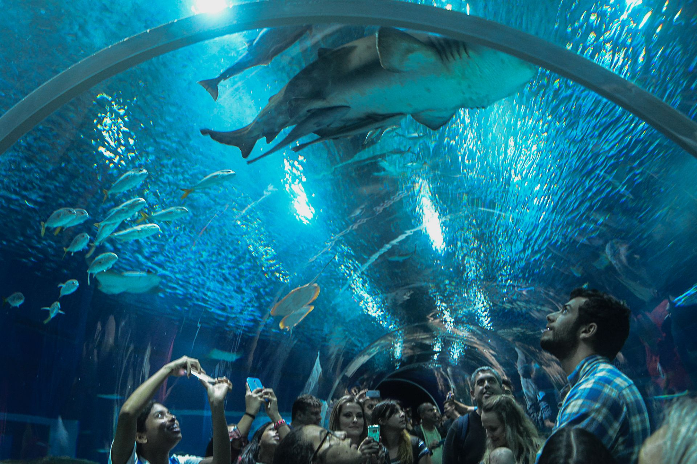

Rio de Janeiro |
|---|
Rio de Janeiro |
|---|
 |
Visitar o Cristo Redentor é uma experiência que transcende o turismo comum e se entrelaça com a busca por significado, beleza e conexão. Esse icônico monumento, erguido no topo do morro do Corcovado, no Rio de Janeiro, Brasil, atrai milhões de visitantes todos os anos, e há razões profundas e inspiradoras para isso. A grandiosa estátua do Cristo com os braços abertos oferece mais do que uma vista panorâmica espetacular da cidade do Rio, a Baía de Guanabara e as praias que se estendem até o Oceano Atlântico. Ela também proporciona um momento de contemplação, um momento em que o indivíduo é convidado a refletir sobre questões que ultrapassam o cotidiano agitado. A figura do Cristo Redentor não é apenas um símbolo religioso, mas uma representação de acolhimento, compaixão e paz que transcende barreiras culturais e espirituais. A sua presença imponente no alto do morro parece abraçar a cidade e todos os que a visitam, convidando-os a considerar as questões maiores da vida, independente de sua fé pessoal. |
|
Visitar a Escadaria Selarón no Rio de Janeiro é uma experiência fascinante que combina arte, cultura e história de uma forma única. Localizada no bairro boêmio de Santa Teresa, essa colorida e intrincada escadaria é um testemunho da visão criativa e do amor pelo Rio de Janeiro do artista chileno Jorge Selarón. A escadaria é uma obra em constante evolução, coberta por mais de 2.000 azulejos de cerâmica, azuis, verdes, amarelos e vermelhos, que Selarón coletou de diferentes partes do mundo. Cada azulejo é como um fragmento da história global, incorporado à estrutura da escadaria de maneira única e harmoniosa. Essa mistura de cores e estilos é um reflexo da diversidade cultural da cidade e do espírito acolhedor do povo carioca. Além de sua aparência visual impressionante, a Escadaria Selarón também carrega um profundo significado emocional. Ela foi concebida por Selarón como uma homenagem ao Rio de Janeiro, uma cidade que ele adotou como sua casa e que ele queria celebrar por meio de sua arte. Ele dedicou décadas de trabalho à escadaria, colocando nele suas paixões e emoções, tornando-a uma expressão artística única de sua visão. A escadaria se tornou um ponto de encontro para moradores locais e turistas de todo o mundo. É um lugar onde a arte transcende barreiras linguísticas e culturais, conectando pessoas através da apreciação comum pela criatividade humana. Além disso, sua localização em Santa Teresa, um bairro charmoso e boêmio, acrescenta uma atmosfera encantadora à visita, proporcionando um contraste intrigante com a agitação do restante da cidade. A Escadaria Selarón também serve como um memorial para Jorge Selarón, que tragicamente faleceu em 2013. Sua dedicação e paixão pela escadaria deixaram um legado duradouro, tornando-a um ponto de referência imperdível para qualquer pessoa que visite o Rio de Janeiro. É um lugar onde a arte de rua, o compromisso cultural e a paixão individual se entrelaçam de maneira extraordinária, fazendo da visita à Escadaria Selarón uma experiência enriquecedora e memorável. |


|

 |
Visitar o Bonde de Santa Teresa no Rio de Janeiro é uma experiência que combina história, charme e autenticidade, oferecendo aos visitantes uma oportunidade única de mergulhar na atmosfera encantadora de uma parte única da cidade. Este bonde histórico, também conhecido como "Bonde de Santa", é mais do que um simples meio de transporte; é uma jornada no tempo e uma maneira especial de explorar a área boêmia e culturalmente rica de Santa Teresa. O bonde, que opera desde o início do século XX, percorre um trajeto que atravessa ruas íngremes e estreitas, passando por casarões antigos, jardins pitorescos e uma paisagem urbana que revela a autenticidade da região. Ao embarcar nessa aventura, os visitantes são levados a uma viagem que parece desconectar do ritmo agitado da cidade moderna, proporcionando um vislumbre da vida cotidiana, da arquitetura colonial e da sensação de comunidade que caracteriza Santa Teresa. Uma das razões pelas quais muitos optam por visitar o Bonde de Santa Teresa é o sentimento de nostalgia e respeito pela história. O bonde é um testemunho vivo das mudanças urbanas e sociais que o Rio de Janeiro experimentou ao longo dos anos. A reconstrução do bonde após um acidente em 2011 e sua subsequente reabertura em 2015 também simbolizam a resiliência da comunidade e o compromisso em preservar um pedaço valioso do patrimônio da cidade. A atmosfera a bordo do bonde é única. Enquanto os trilhos rangem e o bonde serpenteia pelas ruas, os passageiros podem apreciar vistas deslumbrantes da cidade, além de terem a chance de interagir com moradores locais e outros visitantes. A experiência oferece um vislumbre da vida diária de Santa Teresa, com suas galerias de arte, cafés charmosos e ruas de paralelepípedos. A atmosfera descontraída e a sensação de estar imerso em uma comunidade amigável tornam a jornada ainda mais memorável. |
|
Visitar o AquaRio no Rio de Janeiro é uma experiência fascinante e educativa que oferece aos visitantes a oportunidade de explorar a vida marinha de maneira única. Este aquário, localizado na região portuária da cidade, é o maior aquário marinho da América do Sul e apresenta uma série de razões convincentes para ser incluído no roteiro de qualquer viajante. O AquaRio não é apenas um destino turístico; é um centro de educação ambiental que mergulha os visitantes em um mundo submarino diversificado e surpreendente. Com mais de 26 mil metros quadrados de espaço, o aquário abriga uma ampla variedade de espécies aquáticas, desde pequenos peixes tropicais até grandes tubarões e raias impressionantes. As várias exposições e tanques temáticos proporcionam aos visitantes uma visão panorâmica dos ecossistemas marinhos do Brasil e de outros lugares do mundo. |
 |
|
Visitar o Bar da Laje no Rio de Janeiro oferece uma experiência autêntica e envolvente que combina gastronomia, cultura e uma vista deslumbrante da cidade. Localizado em uma favela conhecida como Vidigal, o Bar da Laje transcende estereótipos e proporciona aos visitantes uma visão única da vida carioca. O principal atrativo do Bar da Laje é sua localização singular. Situado nas colinas da favela, o ambiente oferece uma vista panorâmica espetacular da Praia de Ipanema, das montanhas circundantes e do oceano. Essa perspectiva única permite aos visitantes apreciar uma das paisagens mais icônicas do Rio de Janeiro de um ângulo diferente, longe das áreas turísticas tradicionais. Além da vista deslumbrante, o Bar da Laje também é um ponto de encontro cultural e gastronômico. O local é conhecido por sua atmosfera descontraída e autêntica, que reflete o verdadeiro espírito carioca. Os frequentadores têm a oportunidade de experimentar pratos tradicionais da culinária brasileira, bem como coquetéis refrescantes e bebidas locais. |
Visitar o Estádio do Maracanã no Rio de Janeiro é uma experiência emocionante que combina história, paixão esportiva e cultura. O Maracanã é mais do que um simples estádio de futebol; ele é um ícone do esporte e um local carregado de significado para os brasileiros e os amantes do futebol ao redor do mundo.
O estádio foi inaugurado em 1950 para a Copa do Mundo da FIFA daquele ano e rapidamente se tornou um dos maiores templos do futebol global. Sua capacidade de reunir multidões apaixonadas e vibrantes transformou-o em um lugar onde a energia das partidas transcende o próprio esporte, tornando cada jogo uma celebração única. O Maracanã viu momentos históricos, como a final da Copa do Mundo de 1950 e a final dos Jogos Olímpicos de 2016, tornando-se palco de memórias esportivas inesquecíveis.
Mas a visita ao Maracanã não é apenas para os fãs de futebol. Mesmo aqueles que não estão profundamente envolvidos no esporte podem apreciar a grandiosidade arquitetônica do estádio e sua importância cultural. Passear pelos corredores que já viram lendas do futebol e ouvir histórias sobre os momentos épicos que aconteceram ali pode ser emocionante para qualquer um.